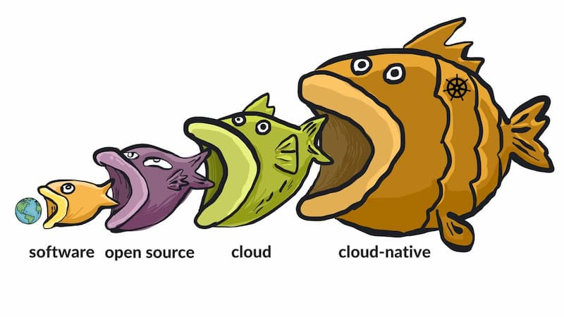

転載：ソフトウェアがソフトウェアを食べる、プログラミングの仕事は増えるのか？
作者：阮一峰
1、
最近、海外で面白いタイトルの記事がありました。「ソフトウェアがソフトウェアを食べる」というものです。
著者は、大規模ソフトウェアや汎用ソフトウェアがますます強力になり、小規模ソフトウェアや専用ソフトウェアを置き換え、いわば後者を「食べて」しまうと述べています。

自身の経験を例に、クラウドサービスが多くの小さなソフトウェアを置き換えたと述べています。
「私はこの現象が起こるスピードを自分の目で見てきました。最初の仕事は小さなスタートアップで、たくさんの物理サーバーを持っていました。今では、Web スタートアップがサーバーを直接管理することはほとんどなく、みんな Amazon AWS のコンソールでボタンやリンクをクリックするだけです。」
フレームワークの発展も、ゼロからコードを書く必要性を減らしています。
「プログラマーはかつてゼロから構築する必要がありましたが、ソフトウェアライブラリの発展が私たちの利用速度を上回り、ソフトウェアが新しいソフトウェアを自動生成することさえあります。これが ‘ノーコード’ や ‘ローコード’ ソリューションが急増している理由です。今や自分でコードを書く理由は減り、やるべきことは異なる製品を統合することだけです。」
結論として、ソフトウェア自動化技術の発展により、ソフトウェアエンジニアの需要が減少し、将来のプログラマーは今より少なくなるかもしれない というのです。
2、
私はこの話題にとても興味があります。なぜなら、これは未来の大きな変化を予測しており、雇用のトレンドに直結しているからです。もし将来、ソフトウェアの大規模化と自動化がプログラマーの需要を抑制するなら、若者にプログラマーを勧めるべきではありません。
Hacker News フォーラムではこの記事について熱い議論が交わされました。大多数（現役プログラマー）の意見は、この考えは何十年も前から言われているが、全くの杞憂で、実際は逆にプログラマーは増え続けている というものです。
「10歳のとき、Qbasic でコーディングを始めました。父に将来プログラマーになりたいと言ったら、コンピュータはすぐに自動化され、別の仕事を探さなければならなくなるだろうと言われました。
しかし、23年経った今もプログラマーの需要は増え続けており、今もなお増加傾向です。
ソフトウェアが大半のニーズを自動で解決する抽象レベルには、まだまだ遠いと思います。記事で挙げられている k8s、docker、kafka、databricks、redshift などの新しいツールは多くのプログラマーを置き換えましたが、実際にはより多くのプログラマー需要を生み出しています。
プログラマーが解決すべき課題は新しい場所に移っただけです。」
上記の引用の通り、現実にはプログラミングで解決すべき課題は減るどころか増えており、プログラマーも増えています。原文の2つの論拠は成り立ちません。
まず、クラウドサービスは確かに企業のサーバー管理を不要にしましたが、docker、kubernetes、データベースのシャーディングやインデックス、フェイルオーバー、バックアップ、メッセージキューなどの技術に精通した人材は依然として必要です。これらはより統合され、組み合わせやすくなりましたが、それぞれの相互作用や設定方法を理解するのは依然として複雑です。
次に、「ノーコード開発」は一部の汎用的なソフトウェア問題しか解決できず、いずれカスタマイズが必要になります。その時はプログラマーがコードを修正しなければユーザーは使い続けられません。
要するに、世界はますます自動化されており、自動化の本質はソフトウェアなので、プログラマーの需要は増える一方で減ることはありません。
3、
ただし、フォーラムには原著者の意見に賛同する少数派もいて、プログラマーが増え続けるのは過去の話で、今後は違うかもしれないと考えています。今はソフトウェア開発の「変異点」かもしれず、今後の展開はこれまでと異なる可能性があります。
市場は docker や kubernetes など新しいツールに詳しい人材を求めていますが、これは主に大企業の話であり、小企業は kubernetes を必要としません。小企業が直面する複雑さは限られており、大企業の提供するシンプルなソリューションを使えば十分で、自社開発の必要はほとんどありません。
また、会社のビジネスが技術中心でない場合（ほとんどの会社は IT 企業ではありません）、ノーコードソリューションを使うのが最も効果的です。ソフトウェアエンジニアリングに多額の費用をかけずに、素早く導入できます。
歴史的に、ある分野でプログラミングで解決すべき課題が大量に発生すると、汎用的なソリューションが生まれ、90%のケースが解決されます。その後、その分野でのプログラマー需要は急速に減少します。
「30年前、GUI の開発は困難でしたが、Visual Basic がそれを変えました。
20年前、Web アプリの作成は困難でしたが、PHP がそれを変えました。
10年前、複雑なウェブレイアウトの作成は困難でしたが、Bootstrap がそれを変えました。
今、機械学習は難しいですが、PyTorch がそれを変えています。
どんな難題も最終的には有効なソリューションが生まれ、90%のケースが解決されます。大半の会社にはそれで十分です。残りの10%は一部の会社がプログラマーに依頼して解決し、残りは永遠に解決されません。」
したがって、新しい分野が次々と現れれば、より多くのプログラマーが必要になりますが、これらの分野での需要は長続きしません。ソリューションが生まれれば、需要は急速に減少します。
4、
上記の議論を読んで、私の考えはこうです。将来のプログラマー需要がどうなるかは、単純に増減で答えられるものではなく、2つの要因に依存します。
（1）人々のニーズの増加速度が、ソフトウェア自動化の進化速度を上回るかどうか。
既存のシーンは最終的に汎用ソリューションで解決され、プログラマーを雇う必要は確かに減っていきます。プログラマーの雇用は主に新しいシーンの出現に依存します。そして新しいシーンの増加速度がソフトウェア自動化の進化速度を上回らなければ、古いソリューションが自動的に新しいシーンのソリューションに進化するかもしれません。
（2）ソフトウェア開発の難易度が、機械学習の進化速度を上回る必要がある。
プログラマーの数は、ソフトウェア開発の難易度にも関係します。難易度が低いほど、より多くの人がこの仕事に従事できます。かつてはコンピュータのハードウェアやアセンブリ言語を理解しなければソフトウェア開発はできませんでしたが、今はフレームワークさえ分かれば十分で、より多くの一般人がプログラマーになっています。
将来、プログラミングはますます簡単になるでしょうが、簡単になるほど機械が人間に代わって仕事をするようになります。したがって、ソフトウェア開発の難易度は機械学習のレベルを上回る必要があり、そうでなければ需要の増加はより多くの機械による自動プログラミングを生むだけで、人間の雇用は増えません。
（完）